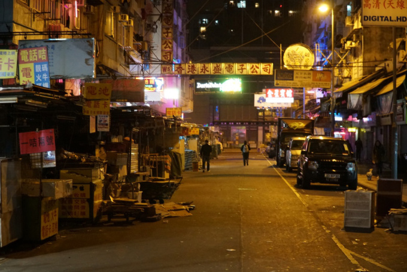
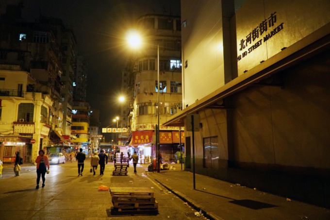
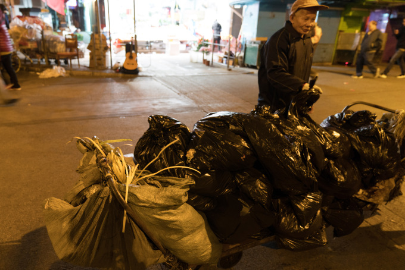
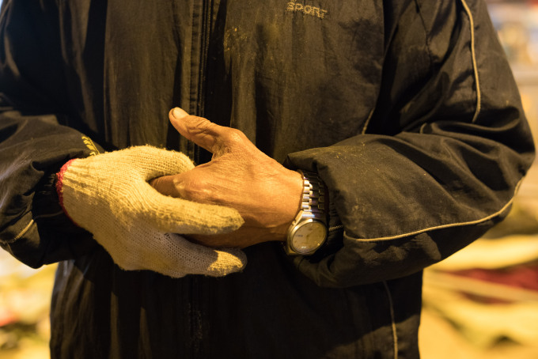
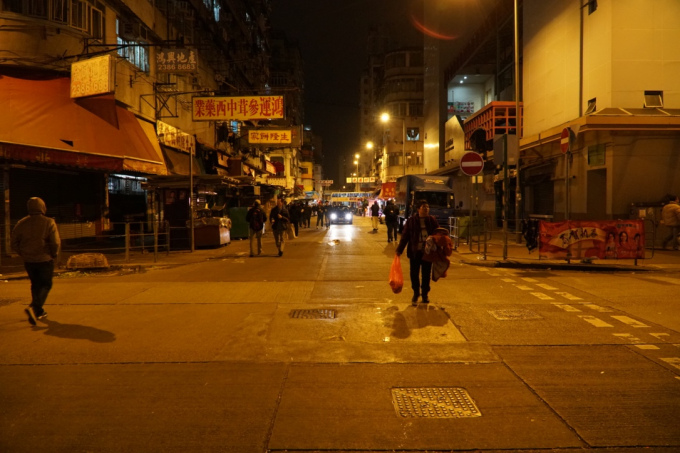

According to the latest population projections for 2017 to 2066 published by Census and Statistics Department of HKSAR, population ageing is expected to accelerate in the coming next 2 decades.
By 2036, the number of elderly people will be 2.37 million(31% of the total population), increasing sharply from 1.16 million(17%) in 2016. At that time, every 5 persons at the working age had to support 3.5 children and elderly persons on average. Without stable income, they will be defined as poor and the poverty rate of elderly persons aged 65 and above increased to over 30 percent in 2016. Government has been increasing expenditures on social welfare to release the pressure imposed by the persistent ageing trend.
It is a chilly midnight on Feb.9,2018, the peddlers closed their stores.
As the tmperature fell to 13 degrees, it urged people on the street to rush back home.
Uncle Wah,78 years old, was to finish his work of transporting cart of trash of the day.
Each bag of trashes is 40 to 50 kilograms. A cart of trash bags weighs around 100 kilograms and worths 20 to 30 HK dollars.
He starts working at around 19:00 and finishes it at around 24:00 every day. However, this is not a guaranteed job, only when the trash company is short of labor force, he gets their assignments.
The payments are always delayed, and he has to wait. Near to Chinese New Year, he went back to his hometown recently with no spare money.
He has faith in both Jesus and Tin Hau, and he prays for physical health from these western god and Chinese goddess, not the wealth. And he believes it is his sincere pray that gets blessings from them to keep him capable of working at his age.
He has no jobs in the daytime, so he usually takes a walk to mountains to keep healthy, which helps him work better at night.
Living with his wife and grandson, they depend on his salary and his retirement pension of 2000 HK dollars every month.
He usually buys fruits to share it with his families. Sometimes, he gets neighbourhoods' sharing of food and discount.
He transported his last cart of trash and said that the everyday sunshine empowers him to regain power.
When most people return home at midnight in Sham Shui Po, there are people wandering around to clean up the streets. Most of which are elderly people under the poverty line.